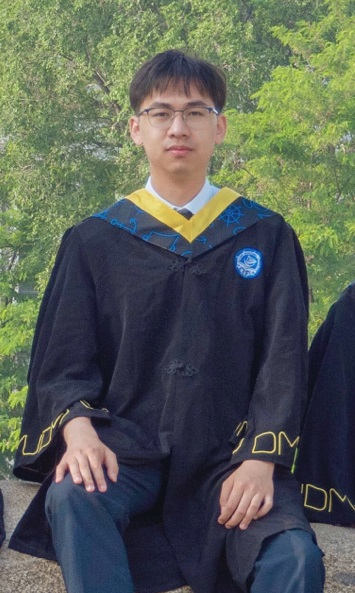

Xiuwei ShangPostgraduate
Information Processing Center (IPC) - System Security Group |
 |
Biography
Now I am a Postgraduate Student at Information Processing Center (IPC) in University of Science & Technology of China, supervised by Prof. Weiming Zhang and Assoc. Prof. Shaoyin Cheng. I received my B.S. degree of Computer Science and Technology from Dalian Maritime University, 2023.
From March 2021 to September 2023, I worked as an undergraduate research assistant in the TSMC Intelligent Software Engineering Laboratory, Dalian Maritime University, supervised by Assoc. Prof. Shikai Guo. Our laboratory also has close cooperation with Prof. He Jiang and Assoc. Prof. Xiaochen Li of Dalian University of Technology.
My research interests include AI(NLP/LLMs/Agent) for Software Engineering/Security, especially Binary/Source Code Representation, Understanding, and Analysis.
Education
-
2023.09 -- 2026.06 (Expected)
University of Science & Technology of China | School of Cyber Science and Technology
-
Master of Electronic Information (Cyber and Information Security)
Advisors: Prof. Weiming Zhang and Assoc. Prof. Shaoyin Cheng -
2019.09 -- 2023.06
Dalian Maritime University | School of Information Science and Technology
-
Bachelor of Computer Science and Technology
GPA: 4.44 / 5.0, Avg. Score: 94.4 / 100, Rank: 1 / 97
Advisors: Assoc. Prof. Shikai Guo and Assoc. Prof. Hui Li
Publications
(* indicates equal contribution)-
[TOSEM'24]
Analyzing and Detecting Information Types of Developer Live Chat Threads
CCF-A
Xiuwei Shang, Shuai Zhang, Yitong Zhang, Shikai Guo, Yulong Li, Rong Chen, Hui Li, Xiaochen Li, He Jiang
ACM Transactions on Software Engineering and Methodology, 2024
-
[ICSME'24]
How Far Have We Gone in Binary Code Understanding Using Large Language Models
CCF-B
Xiuwei Shang, Shaoyin Cheng, Guoqiang Chen, Yanming Zhang, Li Hu, Xiao Yu, Gangyang Li, Weiming Zhang, Nenghai Yu
The 40th International Conference on Software Maintenance and Evolution, 2024, Flagstaff, AZ, USA
[ArXiv] -
[EMNLP'24]
RealVul: Can We Detect Vulnerabilities in Web Applications with LLM?
CCF-B
Di Cao, Yong Liao, Xiuwei Shang
The 2024 Conference on Empirical Methods in Natural Language Processing, Main Track, 2024
-
[NeurIPS'25]
DPIC: Decoupling Prompt and Intrinsic Characteristics for LLM Generated Text Detection
CCF-A
Xiao Yu, Yuang Qi, Kejiang Chen, Guoqiang Chen, Xi Yang, Pengyuan Zhu, Xiuwei Shang, Weiming Zhang, Nenghai Yu
The 38th Annual Conference on Neural Information Processing Systems, 2024
[ArXiv] -
[ACM MM'24]
SemGIR: Semantic-Guided Image Regeneration based method for AI-generated Image Detection
CCF-A
Xiao Yu, Kejiang Chen, Kai Zeng, Han Fang, Zijin Yang, Xiuwei Shang, Yuang Qi, Weiming Zhang, Nenghai Yu
The 32th ACM International Conference on Multimedia, 2024
-
[PAAP'22]
Do Not Have Enough Data? An Easy Data Augmentation for Code Summarization
Zixuan Song, Xiuwei Shang, Mengxuan Li, Rong Chen, Hui Li, Shikai Guo
IEEE 13th International Symposium on Parallel Architectures, Algorithms and Programming, Beijing, China, 2022
Best Paper Runner-up Awards
-
[NEUCOM'23]
An Data Augmentation method for Source Code Summarization
CCF-C
Zixuan Song, Hui Zeng, Xiuwei Shang, Guanxi Li, Hui Li, Shikai Guo
Neurocomputing, 2023
Preprints and under review
(* indicates equal contribution)-
[TOSEM'25]
FoC: Figure out the Cryptographic Functions in Stripped Binaries with LLMs
CCF-A
Xiuwei Shang*, Guoqiang Chen*, Shaoyin Cheng, Yanming Zhang, Weiming Zhang, Nenghai Yu
ACM Transactions on Software Engineering and Methodology, 2025 (Under Major Revision)
[ArXiv] -
[EMSE'25]
An Empirical Study on the Effectiveness of Large Language Models for Binary Code Understanding
CCF-B
Xiuwei Shang, Shaoyin Cheng, Guoqiang Chen, Gangyang Li, Li Hu, Yanming Zhang, Weiming Zhang, Nenghai Yu
Empirical Software Engineering, 2025 (An invited extended version of the ICSME'24 paper)
-
['25]
Binary Code Similarity Detection via Graph Contrastive Learning on Intermediate Representations
CCF-B
Xiuwei Shang, Li Hu, Shaoyin Cheng, Guoqiang Chen, Benlong Wu, Weiming Zhang, Nenghai Yu
[ArXiv] -
['25]
BinMetric: A Comprehensive Binary Analysis Benchmark for Large Language Models
CCF-A
Xiuwei Shang, Guoqiang Chen, Shaoyin Cheng, Benlong Wu, Li Hu, Gangyang Li, Xiao Yu, Weiming Zhang, Nenghai Yu
-
['25]
AutoPT: How Far Are We from End2End Automated Pen-testing?
CCF-A
Benlong Wu, Guoqiang Chen, Kejiang Chen, Xiuwei Shang, Jiapeng Han, Yanru He, Weiming Zhang, Nenghai Yu
[ArXiv] -
['25]
Dig in Shadow: Detecting Unexpected Communication Functions in Binaries via Code Representative Learning
CCF-A
Yanming Zhang, Shaoyin Cheng, Guoqiang Chen, Xiuwei Shang, Weiming Zhang, Nenghai Yu
Teaching Experience
- Teaching Assistant, Software Security and Testing, University of Science & Technology of China (2024 Fall)
Honors & Awards
- Anheng Technology Scholarship of University of Science & Technology of China, 2024.10
- First-class Scholarship of University of Science & Technology of China, 2024.09
- First-class Scholarship of University of Science & Technology of China, 2023.09
- National Scholarship Awarding Representatives in “the People's Daily”, 2023.05
- China National Scholarship, 2022.12
- China National Scholarship, 2021.12
- Outstanding Graduates of Liaoning Province, 2023.05
- Top Ten Students and President Scholarship of Dalian Maritime University, 2022.11
- Excellent Undergraduate Thesis of Dalian Maritime University, 2023.06
- COSCO Marine Science and Technology Innovation Advanced Individual, 2022.11
Competitions
- ATEC Technology Elite Challenge (AI-generated News Detection Track), Online 3rd Place, 2024.03
- National College Student Computer Design Contest, National First Prize, 2022.07
- International Mathematical Contest in Modeling (ICM), Meritorious Winner, 2022.05
- International Mathematical Contest in Modeling (ICM), Honorable Mention, 2021.05
- National Undergraduate Photoelectric Design Competition, National First Prize, 2022.08
- National Undergraduate Mathematics Competition, National Third Prize, 2021.10
- China Undergraduate Mathematical Contest in Modeling (CUMCM), Province First Prize, 2021.10